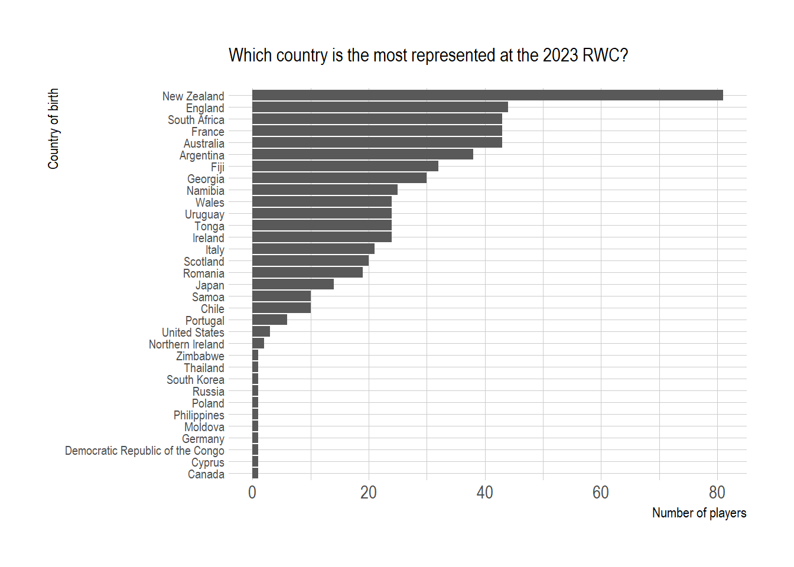
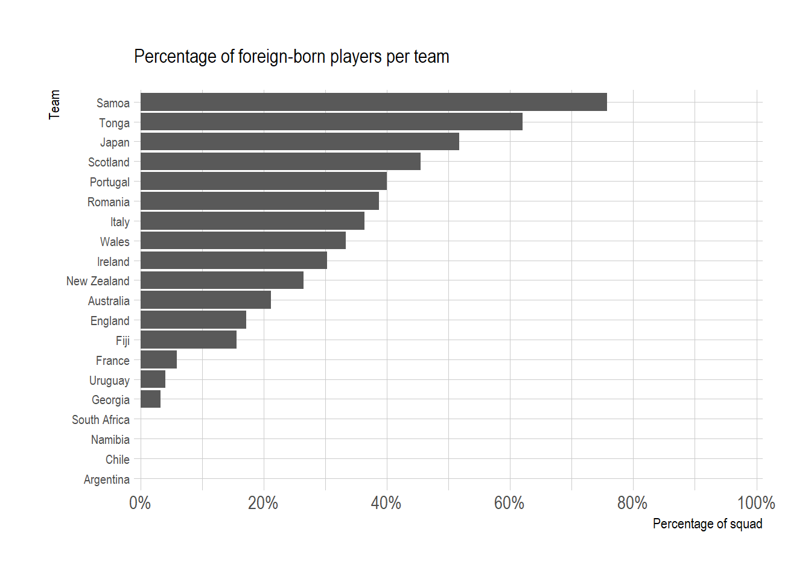

VanCircleFoodMap = {let width =800;let container = DOM.element('div', { style:`width:${width}px;height:${width/1.6}px` });yield container;// Did not use setView because we are using "fit bounds" to get the polygons to determine thislet map = L.map(container);//add base layerlet baseLayer = L.tileLayer(cartoLight, {attribution: cartoAttr,subdomains:'abcd',maxZoom:20,minZoom:0 }).addTo(map);//geoMarker objlet geojsonMarkerOptions = {radius:5,fillColor:~team,color:"#ff7800",weight:1,opacity:1,fillOpacity:0.6 };//passing a pointToLayer function in a GeoJSON options object when creating the GeoJSON layer. //This function is passed a LatLng and should return an instance of ILayer, in this case likely a Marker or CircleMarker.//we use arrow notation here, but this essentially is the same as using an anonymous function like so: function (feature, latlng){...return stuff}let VanAreasLayer = L.geoJSON(players, {pointToLayer: (feature, latlng) => {return L.circleMarker(latlng, geojsonMarkerOptions); }}).bindPopup(function (Layer) { return Layer.feature.properties.player+'<br> Place of birth: '+ Layer.feature.properties.birth_info+'<br> Position: '+ Layer.feature.properties.position+'<br> Team: '+ Layer.feature.properties.team; }) .addTo(map);//finds bounds of polygon and automatically gets map view to fit map.fitBounds(VanAreasLayer.getBounds());}
Select a team
Map of players
viewof text = Inputs.select([ "New Zealand","France","Italy","Uruguay","Namibia","South Africa","Ireland","Tonga","Romania","Wales","Australia","Fiji","Georgia","Portugal","England","Scotland","Japan","Argentina","Samoa","Chile"], {value:"France",label:"Select a team:",sort:true})newplayers = geo.filter(players, (d) => d.team== text)VanCircleFoodMap2 = {let width =800;let container = DOM.element('div', { style:`width:${width}px;height:${width/1.6}px` });yield container;// Did not use setView because we are using "fit bounds" to get the polygons to determine thislet map = L.map(container);//add base layerlet baseLayer = L.tileLayer(cartoLight, {attribution: cartoAttr,subdomains:'abcd',maxZoom:20,minZoom:0 }).addTo(map);//geoMarker objlet geojsonMarkerOptions = {radius:5,fillColor:"#ff7800",color:"#ff7800",weight:1,opacity:1,fillOpacity:0.6 };//passing a pointToLayer function in a GeoJSON options object when creating the GeoJSON layer. //This function is passed a LatLng and should return an instance of ILayer, in this case likely a Marker or CircleMarker.//we use arrow notation here, but this essentially is the same as using an anonymous function like so: function (feature, latlng){...return stuff}let VanAreasLayer = L.geoJSON(newplayers, {pointToLayer: (feature, latlng) => {return L.circleMarker(latlng, geojsonMarkerOptions); }}).bindPopup(function (Layer) { return Layer.feature.properties.player+'<br> Place of birth: '+ Layer.feature.properties.birth_info+'<br> Position: '+ Layer.feature.properties.position+'<br> Team: '+ Layer.feature.properties.team; }) .addTo(map);//finds bounds of polygon and automatically gets map view to fit map.fitBounds(VanAreasLayer.getBounds());}data1 = geo.table(newplayers)
Composition of the squad
Plot.plot({width:800,height:500,marginTop:50,marginLeft:100,marginBottom:10,x: {label:"Country of birth",axis:"top",tip:true,tickRotate:0 },y: {label:"Number of players",grid:true },marks: [ Plot.barX(data1, Plot.groupY({x:"count"}, {y:"country",sort: {y:"x",reverse:true}})), Plot.ruleY([0]) ]})
List of players
The table displays only players for which the place of birth was available on Wikipedia.
Inputs.table(data1,)
Some general stats of the RWC
These numbers should be taken with caution due to missing data, especially for a few teams (see below)


Quality of information
*The data was sourced from Wikipedia and is sometimes incomplete.
When available, the place of birth was extracted from this page, then geocoded with OpenStreetMap. 591 players have been geocoded for a total of 675 players.
Data is incomplete for a few countries, especially for Chili and Portugal: sometimes there is no wikipedia page for the player, or the place of birth is not mentioned.